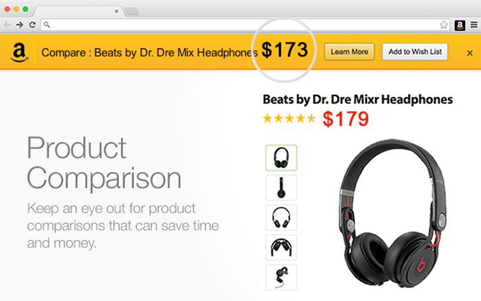
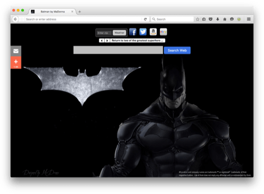
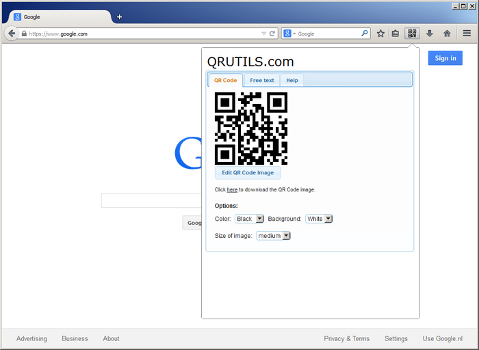
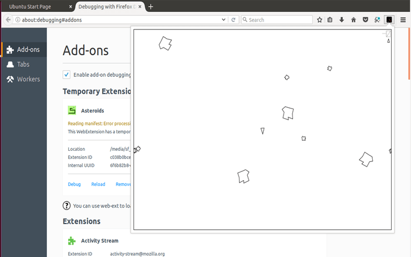

If you are already familiar with the basic concepts of browser extensions, skip this section to see how extension files are put together. Then, use the reference documentation to start building your extension. Visit Firefox Extension Workshop to learn more about the workflow for testing, publishing, and extensions for Firefox.
An extension adds features and functions to a browser. It’s created using familiar web-based technologies—HTML, CSS, and JavaScript. It can take advantage of the same web APIs as JavaScript on a web page, but an extension also has access to its own set of JavaScript APIs. This means that you can do a lot more in an extension than you can with code in a web page. Here are just a few examples of the things you can do:
Enhance or complement a website: Use an add-on to deliver additional in-browser features or information from your website. Allow users to collect details from pages they visit to enhance the service you offer.

Examples: Amazon Assistant for Firefox, OneNote Web Clipper, and Grammarly for Firefox
Let users show their personality: Browser extensions can manipulate the content of web pages; for example, letting users add their favorite logo or picture as a background to every page they visit. Extensions may also enable users to update the look of the Firefox UI, the same way standalone theme add-ons do.

Examples: MyWeb New Tab, Tabliss, and VivaldiFox
Add or remove content from web pages: You might want to help users block intrusive ads from web pages, provide access to a travel guide whenever a country or city is mentioned in a web page, or reformat page content to offer a consistent reading experience. With the ability to access and update both a page’s HTML and CSS, extensions can help users see the web the way they want to.
Examples: uBlock Origin, Reader, and Toolbox for Google Play Store™
Add tools and new browsing features: Add new features to a taskboard, or generate QR code images from URLs, hyperlinks, or page text. With flexible UI options and the power of the WebExtensions APIs you can easily add new features to a browser. And, you can enhance almost any website’s features or functionality, it doesn't have to be your website.

Examples: Swimlanes for Trello and Tomato Clock
Games: Offer traditional computer games with off-line play features, or explore new game possibilities; for example, by incorporating gameplay into everyday browsing.

Examples: Asteroids in Popup, Solitaire Card Game New Tab, and 2048 Prime.
Add development tools: You may provide web development tools as your business or have developed a useful technique or approach to web development that you want to share. Either way, you can enhance the built-in Firefox developer tools by adding a new tab to the developer toolbar.

Examples: Web Developer, Web React Developer Tools, and aXe Developer Tools
Extensions for Firefox are built using the WebExtensions APIs, a cross-browser system for developing extensions. To a large extent, the API is compatible with the extension API supported by Google Chrome and Opera. Extensions written for these browsers will in most cases run in Firefox or Microsoft Edge with just a few changes. The API is also fully compatible with multiprocess Firefox.
If you have ideas or questions, or need help migrating a legacy add-on to WebExtensions APIs, you can reach us on the dev-addons mailing list or in the Add-ons room on Matrix.